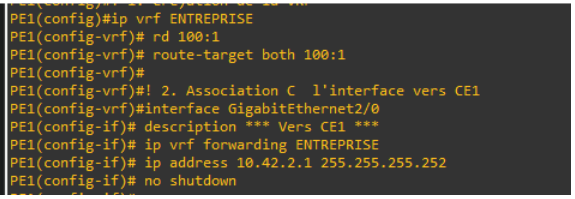
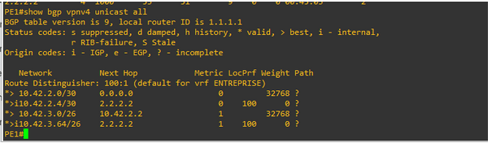
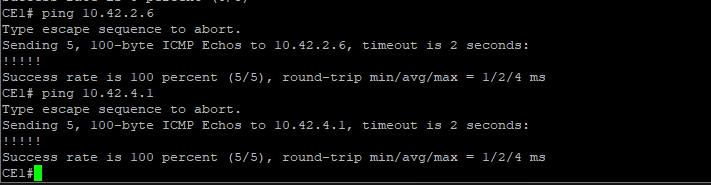

Infrastructure Cœur de Réseau FAI (MPLS / BGP)
Conception et déploiement physique d'une infrastructure complète de Fournisseur d'Accès à Internet (FAI). L'enjeu clé était de configurer des équipements de routage haut de gamme pour acheminer et isoler les flux de multiples clients de manière étanche.
1. Contexte & Objectifs
Dans le cadre de ma spécialisation en parcours Réseaux Opérateurs et Multimédia (ROM), j'ai participé au déploiement d'une architecture de transit opérateur à grande échelle. L'objectif était de simuler le réseau fédérateur d'un FAI acheminant des services d'interconnexion pour des entreprises distantes, tout en assurant l'authentification et l'attribution dynamique d'adresses pour les clients résidentiels.
2. Solutions Techniques Déployées
L'ingénierie réseau a été segmentée sur de vrais équipements Cisco selon deux briques d'infrastructure critiques :
- Cœur IP-MPLS (Backbone) : Configuration du routage interne et de la commutation par labels (MPLS) pour optimiser le transit. Implémentation du protocole MP-BGP (Multi-Protocol BGP) pour le transport des routes VPNv4.
- Isolation logique stricte (VRF) : Virtualisation des tables de routage (Virtual Routing and Forwarding) sur les routeurs de bordure (PE) pour cloisonner de bout en bout le trafic de chaque entité cliente (*L3VPN*).
- Gestion des accès (PPPoE) : Configuration des équipements de bordure client (CE) pour initier des sessions d'authentification point à point et négocier l'adressage WAN dynamiquement.
3. Résultats & Validation
Le cœur de réseau est entièrement stable. L'acheminement des données s'effectue par commutation de labels sans que les routeurs de transit (P) n'aient connaissance des tables de routage privées des clients.

Étanchéité des flux : Isolation des tables de routage par l'implémentation des environnements VRF d'entreprise.

Routage MP-BGP : Échange des préfixes VPNv4 et routage iBGP entre les routeurs PE de l'opérateur.
Validation de la connectivité L3VPN
Les tests d'interconnexion (ping) réalisés entre les deux filiales de l'entreprise cliente confirment que le trafic encapsulé MPLS traverse le cœur FAI de manière totalement transparente.

Succès du test d'interconnexion étanche inter-sites.
4. Compétences acquises & Valeur ajoutée
Rigueur en Ingénierie Opérateur : La manipulation conjointe de MP-BGP, MPLS et des VRF exige une concentration absolue. J'ai compris l'importance critique de la structuration des attributs BGP comme les *Route Targets (RT)* et les *Route Distinguishers (RD)* : une simple incohérence numérique paralyse immédiatement la propagation des préfixes.
Vision Réseau Avancée : Ce projet grandeur nature m'a permis d'appréhender la réalité des infrastructures de télécommunication d'envergure. Maîtriser le cloisonnement multi-clients sur une infrastructure de transport partagée est un atout direct pour concevoir des architectures WAN sécurisées et performantes.